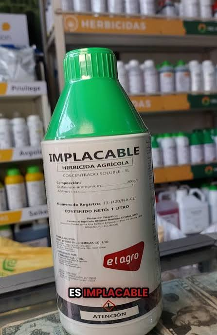
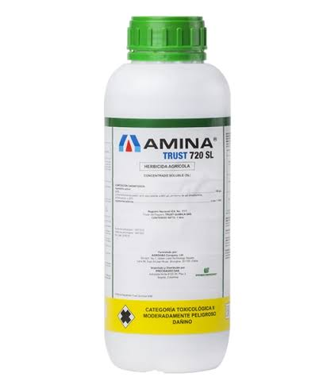
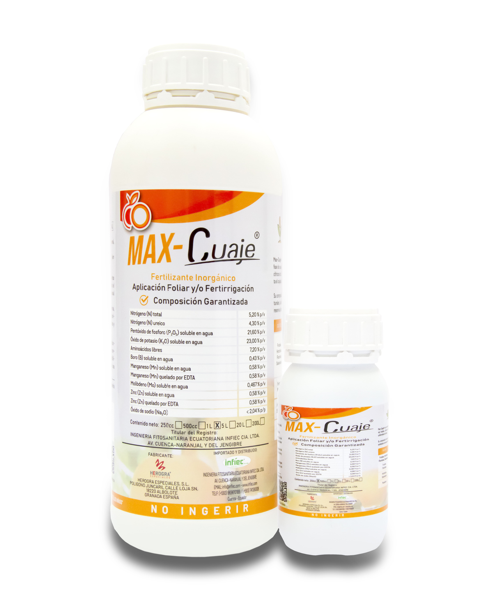
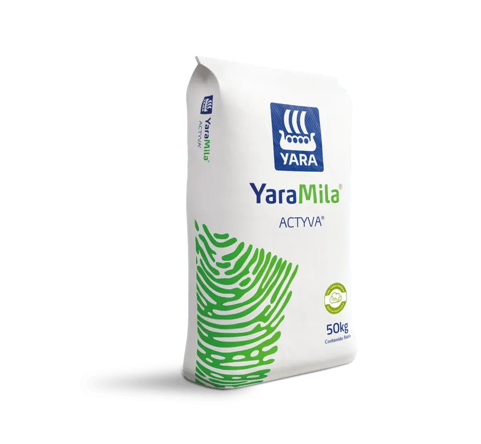
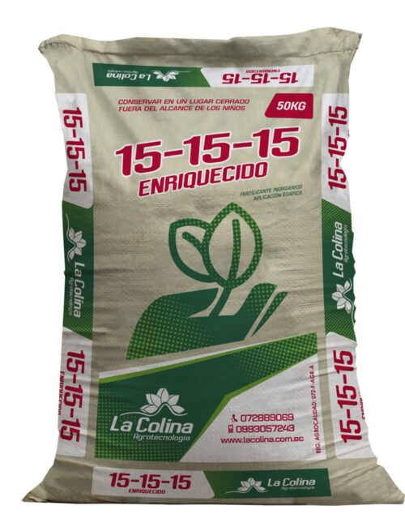
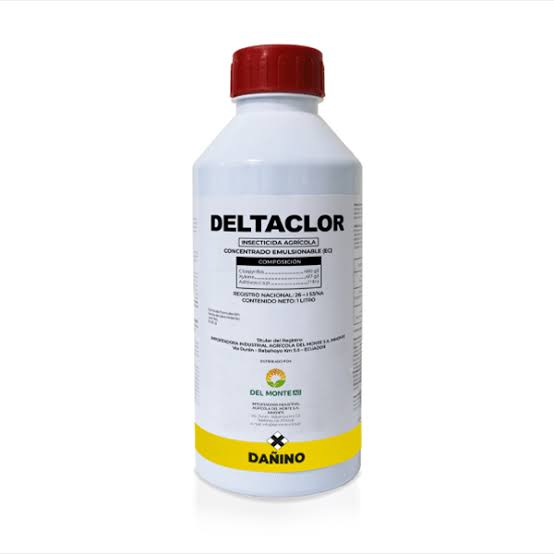
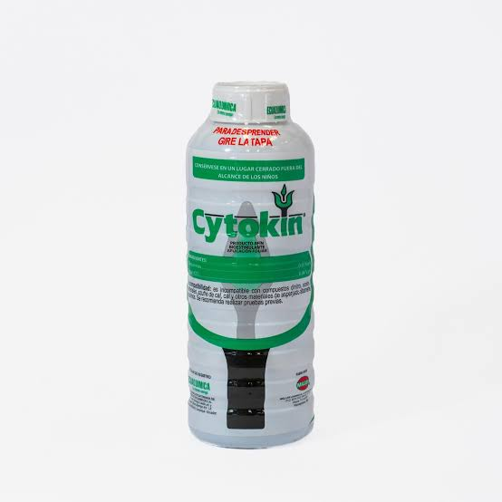
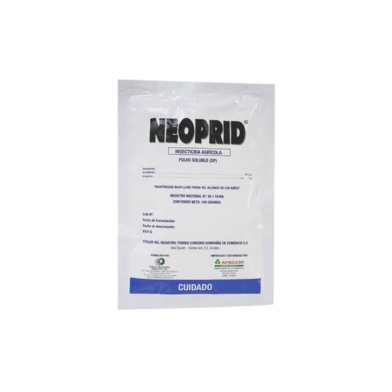

Hervicidas para el control de la maleza
Los herbicidas agrícolas son productos químicos o biológicos diseñados para inhibir, controlar o eliminar las malas hierbas o malezas que compiten con los cultivos por recursos esenciales como el agua, la luz solar, los nutrientes y el espacio, en este caso en mi finca siempre uso estos tipos de herbicidas.
Glamorate
GLAMORATE es el herbicida no selectivo de confianza para agricultores que necesitan un control efectivo y duradero de malezas de hoja ancha y gramíneas. Su fórmula sistémica post emergente actúa desde las hojas hacia el interior de la planta, garantizando una eliminación completa sin dejar residuos activos en el suelo.
Presentaciones
Litro, galón, caneca.
Implacable
IMPLACABLE Es un herbicida de contacto que actúa en los tejidos verdes de las plantas susceptibles, donde penetra principalmente a través de las cutículas. No es absorbido por las raíces de las plantas. IMPLACABLE es absorbido en las primeras 24 horas posterior a la aplicación, se necesita un periodo de 6 horas sin lluvia después de la aplicación para obtener un desempeño eficiente en el control de malezas. IMPLACABLE para aplicaciones dirigidas entre caminos, entre surco o en corona alrededor de una plantación establecida, se puede usar también en quemas químicas totales con amplio espectro de control.
Presentaciones
Litro, galón, caneca.

Amina
AMINA, Herbicida hormonal sistémico, selectivo para cultivos cereales incluyendo césped establecido. Es fácilmente absorbido por las hojas y las raíces caracterizándose por tener mayor control post-emergente sobre malezas de hoja ancha y ciperáceas.
Presentaciones
Litro, galón, caneca.

Tabla de aplicaciones
| Herbicida /1.25lt | Herbicida /0.15lt | Para | |
|---|---|---|---|
| Glamorate (1250ml) | + | Amina (150ml) | 200lt |
| implacable (1250ml) | + | Amina (150ml) | 200lt |
|
NOTA: para una bomba de 20lt aplicar 125ml de glamorate o implacable y 15ml de amina, se reocomienda fumigar 3 veces y después guadañar 3 veces, asi ayudamos al medio ambiente. |
|||
Insumos para la producción del cacao
Los fertilizantes desempeñan un papel crucial a la hora de garantizar que las plantas reciban los nutrientes que necesitan para un crecimiento y un desarrollo óptimos, de ahí que los agricultores tengan a su disposición varios tipos de fertilizantes. Como es habitual en estos casos, todos los tipos de fertilizantes tienen sus ventajas y desventajas y conocerlas es importante a la hora de decantarse por una opción u otra. Mientras que unos son mejores para el suelo y el medioambiente, otros son de más rápida absorción. Veamos con más detenimiento cuáles son los tipos de fertilizantes que se pueden aplicar en el campo y sus características.
Max-cuaje
Fertilizante especialmente adaptado a la fase de cuajado de frutos en cultivos hortícolas, vid, frutales, cítricos, cacao, cucurbitáceas etc. Estimula el desarrollo inicial del fruto. Incrementa el cuajado, engorde y la uniformidad de frutos. Su composición favorece la síntesis de aminoácidos estructurales, la división celular y el transporte de sustancias de reserva al fruto, disminuyendo así el aborto de los mismos. Potencia las fases de floración y cuajado de fruto.
Presentaciones
Litro, cuarto de litro(250ml).

YaraMila ACTYVA
YaraMila® ACTYVA™ es un fertilizante complejo de alto contenido en nitrógeno fabricado en base al método de Nitrofosforación (patente de Yara), y que aporta nitrógeno, fósforo y potasio totalmente asimilables (20-7-10). YaraMila® ACTYVA™ se presenta en forma perlada y resulta especialmente adecuado como abonado de inicio del cultivo.
Para lograr el máximo potencial de los cultivos y proteger el medio ambiente Yara cuenta con la mejor tecnología en el manejo de fósforo. Está herramienta, presente en los fertilizantes de gama YaraMila™ se ha dado a conocer como P-Extend. Aporta además un pequeño contenido en magnesio y azufre.
Presentaciones
Quintal.

Abono triple 15 15 15
Fertilizante edáfico que presenta una fórmula balanceada de Nitrógeno, Fósforo y Potasio, elementos necesarios para la adecuada nutrición de los cultivos en las etapas de inicio o arranque, al estimular el desarrollo precoz de las raíces, el crecimiento de la planta, y fomentar la producción de frutos y semillas.
Presentaciones
Quintal

Tabla de aplicaciones
| Fertilizante soluble / foliar | Cantidad g/ml | Para | |
|---|---|---|---|
| Max-Cuaje9 (foliar) | 300ml | 200 lt | |
| YaraMila ACTYVA (soluble) | 300g | por planta | |
| Triple 15 15 15 (soluble) | 300g | por planta | |
|
NOTA: podemos hacer una mezcla de 1 quintal de YaraMila ACTYVA más medio quintal de Triple 15 15 15 y aplicar 300g por planta de está composición, además podemos mezclar Max-Cuaje con Deltaclor el cual es un insecticida, 300ml de cada uno en un tanque de 200lt. |
|||
Control de insectos, hongos y recuperación de la planta.
El control de plagas en cultivos es el conjunto de técnicas y métodos utilizados para prevenir, reducir o eliminar organismos (como insectos, ácaros, hongos, bacterias, roedores y malas hierbas) que dañan las plantas o disminuyen la productividad agrícola. Su objetivo principal es proteger la salud del cultivo, asegurar la calidad de la cosecha y garantizar la seguridad alimentaria de forma sostenible.
El control químico consiste en aplicar productos fitosanitarios (insecticidas, fungicidas, herbicidas) para detener infestaciones severas. Debe hacerse de forma responsable para no dañar el suelo ni intoxicar el medio ambiente.
Deltaclor
Deltaclor es un insecticida agrícola de amplio espectro y no sistémico, formulado a base de Clorpirifos (480 g/L) en presentación de concentrado emulsionable.
Presentaciones
Cuarto de litro(250ml), Medio litro(500ml), litro, galón, caneca.

Citokyn
CYTOKIN® es un Bioestimulante Natural del crecimiento vegetal que facilita la nutrición de las plantas; promueve el brote y desarrollo de las yemas, espigas y flores; mejora el amarre de las flores y el desarrollo de los frutos, crecimiento de la raíz y sobre todo el vigor de la productividad de la planta. Composición Química: Citoquinina, en forma de kinetin, basado en actividad biológica 0.01% Citoquininas como kinetin 0.01% Otros ingredientes: 99.99% Compatibilidad: Puede ser utilizado con NU-FILM 17 y aplicado en mezcla con la mayoría de agroquímicos.
Presentaciones
Litro, medio litro, cuarto de litro.

Neoprid
Es un insecticida de amplio espectro, sistémico, para aplicación foliar y al suelo, pertenece al grupo químico de los neonicotinoides, que actúa sobre el insecto por contacto e ingestión.
Es agonista del receptor nicotínico de acetilcolina, que afectan a las sinapsis en el sistema nervioso central de los insectos. Los insectos tratados muestran inmediatamente los síntomas de envenenamiento con excitación y parálisis.
Presentaciones
Producto en polvo, soluble en agua.

Tabla de aplicaciones
| Insecticida/ estimulante | Cantidad ml | Para | |
|---|---|---|---|
| Deltaclor (insecticida) | 300ml | 200 lt | |
| Citokyn (estimulante) | 250ml | 200lt | |
| Neoprid (isecticida) | 300g | 200lt | |
|
NOTA: aplicar la mezcla de estos tres productos cada 15 0 30 dias por tres ocasiones, |
|||